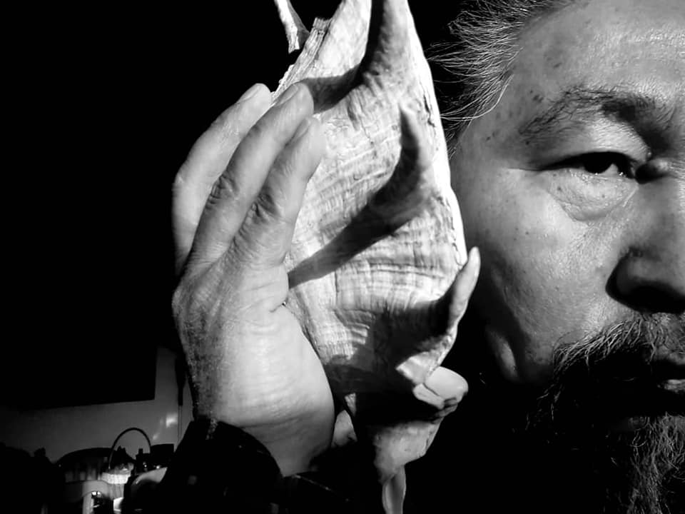

{% extends 'main/base.html' %}
{% block title %}
about
{% endblock %}
{% block content %}

Ракушка
"Ракушка" - так хотели назвать "Селкинчек". Эти мысли витали на монтаже, ибо она была двигателем сюжета и катализатором всех персонажей. Монтажно-тонировочный период проводили на "Казахфильме", со мной был Эрнест Абдыжапаров и монтировала опытная Хадиша Урмурзина, за плечами которой была нашумевшая "Игла" Рашида Нугманова, а ей ассистировала Гуляим.
На днях Дарежан Омирбаев прислал фотографию за монтажным столом, он сейчас заканчивает свою новую картину и смотрю, рядом Гуляим, когда-то была ассистентом, а теперь монтирует неоклассику казахского кино. Дарежан, на самом деле, один из знаковых режиссёров, в ком органично сочетаются язык кино и его мировоззрение. И, что редкость на сегодня, скромный казах доброй души.
Уже заканчивали черновой вариант, когда на "Казахфильм" приехали директора крупнейших кинофестивалей Европы: Локарно - Марко Мюллер и Турина - Альберто Барбера. Они отсматривали фильмы казахских кинематографистов. Известный киновед и кинокритик Гульнара Абикеева посоветовала нам показать материал на любой стадии, подчеркивая, что это уникальная возможность. Мне казалось не совсем корректно выносить на суд незавершенную работу, но она нас убедила, давая понять, что это профессионалы. Когда с Эрнестом зашли в просмотровый зал, в центре сидели Марко и Альберто, нас встретил режиссёр Ермек Шинарбаев, с которым я был в Туре (Франция), где его картина "Месть" получила Гран При. Ермек свободно говорит на английском, французском, он представил нас и предупредил, что, скорее всего, будут смотреть одну или две части, так поступали со всеми предыдущими. Но наш шестидесятиминутный черновой монтаж, ещё и без звука, они, не отрываясь, посмотрели полностью и в конце дали свои визитки. Это означало, что им понравился. Кто-то из директоров спросил у меня, какие черно-белые фильмы я смотрел, не думая, сходу ответил: "Чапаев", те улыбнулись, а Ермек залился смехом, потом он эту историю рассказывал, как анекдот. Видимо, задавая вопрос, они подразумевали Одзу, Брессона... Иными словами, классику чёрного-белого кино. Я волновался, что пришло в голову, то и сказал. В разговоре речь зашла о том, как будет называться фильм, мы сказали, Ракушка.
Все шло к тому, чтобы назвать Ракушка. А ведь и съёмки не могли начать, до тех пор, пока не пришла идея с Ракушкой. Представляете, группа, находясь в экспедиции, больше десяти дней простаивала.
И все же, окончательная версия монтажа привела нас к "Селкинчеку", к тому же, это был первый фильм после распада СССР и нам так хотелось сделать, в нашем понимании, истинное кыргызкое кино и по принципу "целуется - не целуется", мы отказались от первоначального названия.
История с Ракушкой на этом не закончилась, по-моему в Акипрессе было интервью с одним из наших режиссёров, который назвал самой эротичной сценой в кыргызком кино, когда Девушка и Моряк слушают Ракушку и на крупном плане, Девушка руками нежно гладит её.
После нескольких лет выхода на экраны "Селкинчека", читая публикации о звуке, случайно обнаружил, что по мифологии, Ракушка является "губами Всевышнего" и тот, кто прислонит её к уху, услышит "голос Создателя".
{% endblock %}